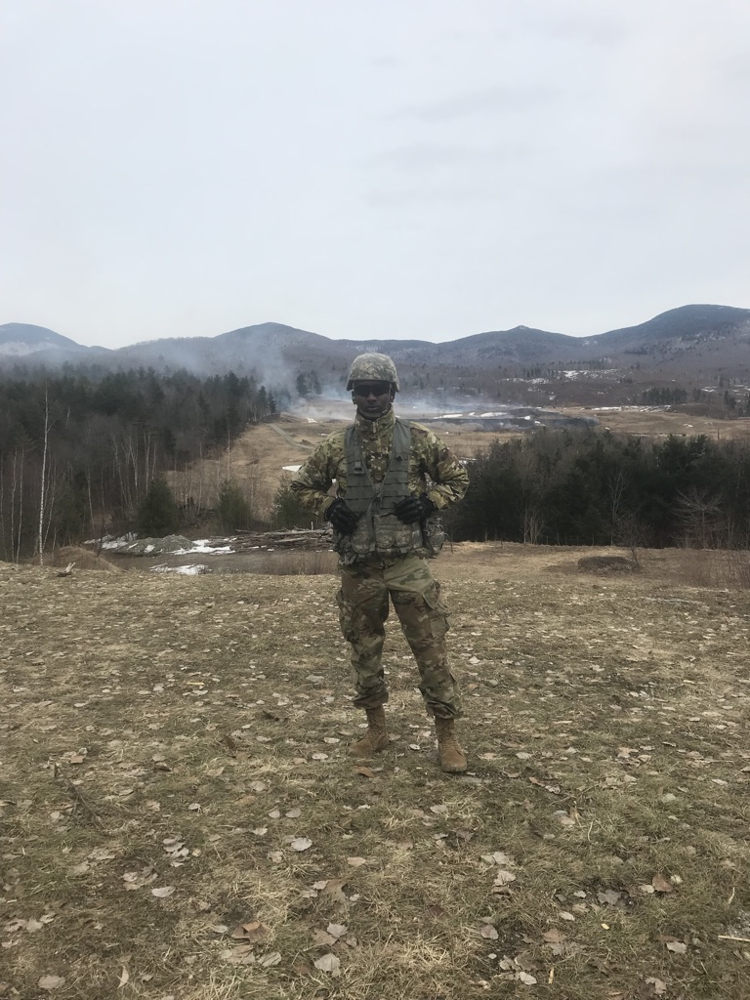

<!DOCTYPE html>

<html lang="en">
<head>
    <meta charset="UTF 8">
    <meta http-equiv="X-UA-Compatible" content="IE=edge">
    <meta name="viewport" content="width=device-width, initial-scale=1.0">
    <title>My Journey</title>
    <style>
        nav{
            text-align: center;
        }
        p{
            color:white;
            font-size:large;
        }
        section{
            color: white;
            font-size:large;
        }

        h1{
            color:white;
        }

        nav a {
            display:inline-block;
            color: orange;
            font-style: Normal;
            font-weight: bold;
            font-size:xx-large;
            text-decoration: none;
            margin: 0px;
            padding: 16px 28px;
            transition: color 0.3s;
        }
        body{
            background-image: url(back-ground.jpg);
        }
        img{
            width:250px;
            height: 200px;
            margin: 5px;
            border: 6px;
        }
        footer{
            text-align: center;
            margin-top: auto;
        }
    </style>
</head>
</html>

<body>
    <nav id="nav-bar">
        <a href="index.html">Home</a>--
        <a href="about-me.html">About Me</a>--
        <a href="journey.html">My Journey</a>
    </nav>
    
    <main>

        <article>
            <h1>My Journey:</h1>
            <section>
                <aside id="chapers of life">
                    <ul>
                        <li>Moved to the United States</li>
                        <li>Graduated high school</li>
                        <li>Joined the U.S Army Reserves</li>
                        <li>Michael's Store Associate </li>
                        <li>YCMD Intern</li>
                        <li>Bachelor's in Speech, Language, and Hearing Sciences</li>
                    </ul>
                </aside>
            </section>
             <p>
                I was born in St. Mary, Jamaica. There, I spent most of my
                childhood until the age of thirteen. My family and I then
                migrated to the United States where we would live in the
                state of Connecticut. Coming to the U.S meant more but also better opportunities. I attended high school, and
                at the end of my high school career, I decided to join the
                U.S. Army Reserves as an 88M. I learned a lot as a soldier, but one trait that I developed the most was my discipline.
                I've also seen experience in other roles such as customer service associate at Michael's Craft Store, laboratory
                intern at YCMD.
            </p>
            <p>
                I had to get accustomed to welcoming and conversing with guest at Michaels which was always rewarding.
                The position at YCMD allowed me to work independently which enforced my time management skills and work proficiency.
                I would then attend University of Connecticut, where I received a bachelor's in Speech, Language, and Hearing Sciences.
                This was extremely rewarding due it being one of my most challenging feats yet.The current chapter I'm focused on achieving is becoming a full-stack Java developer.
            </p>
            
            
            
            
            
            <footer>
            <p>Phone:(475)439-4933<br>Email: kirbykidd46@gmail.com</p>
            </footer>
        </article>

    </main>
</body>